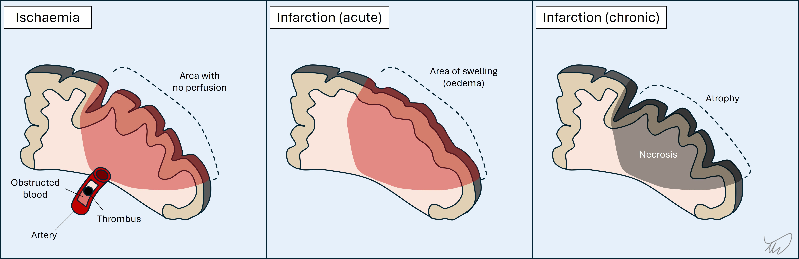
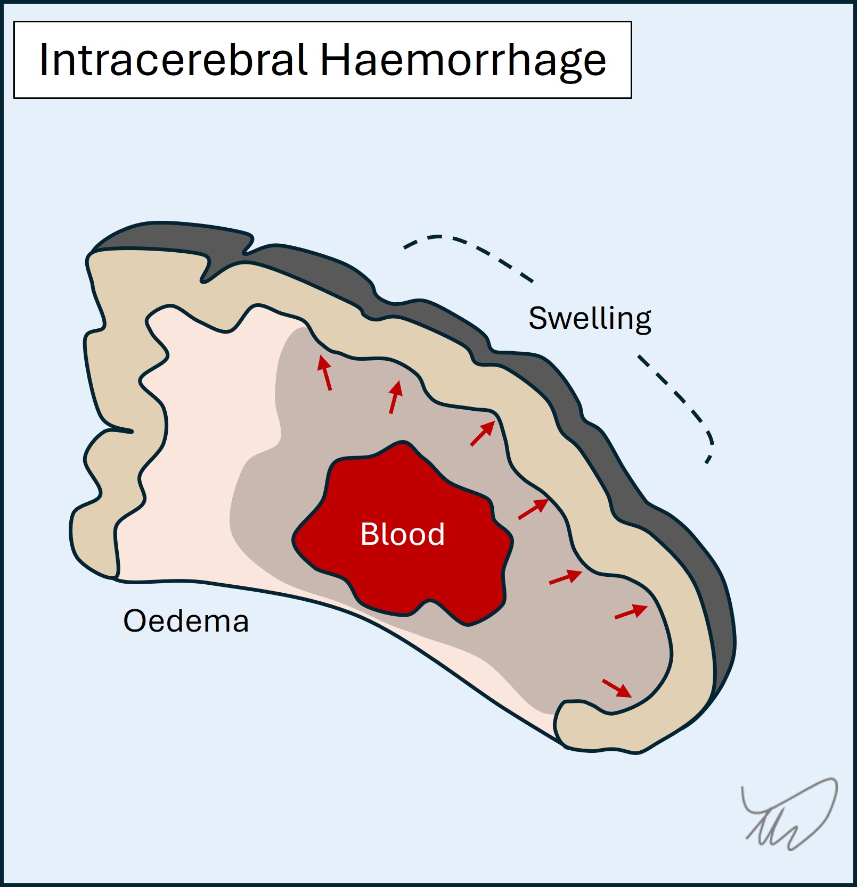
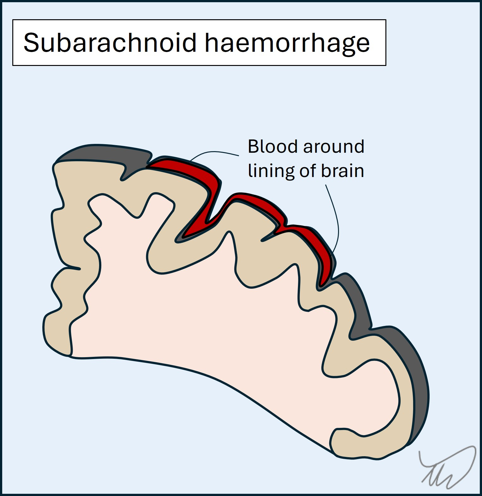
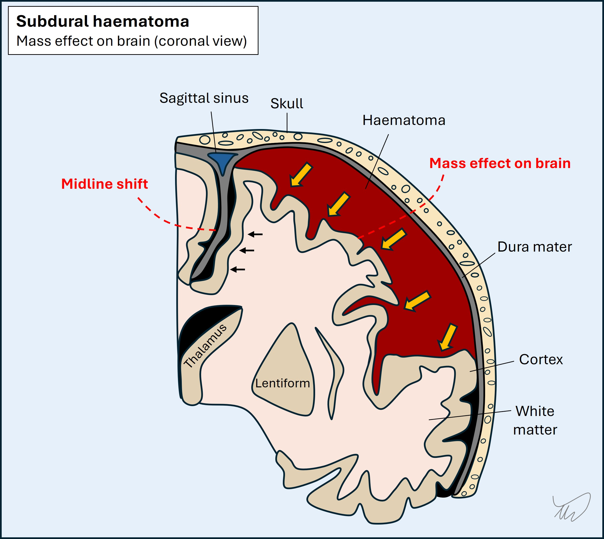
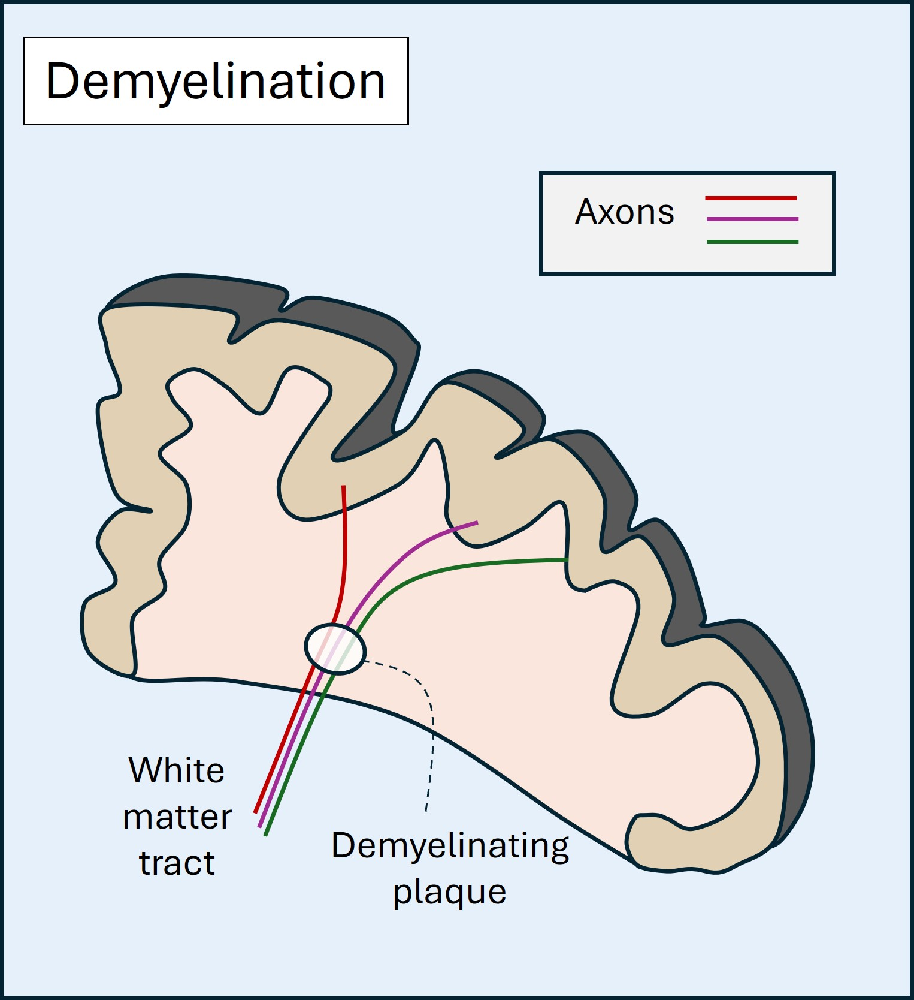
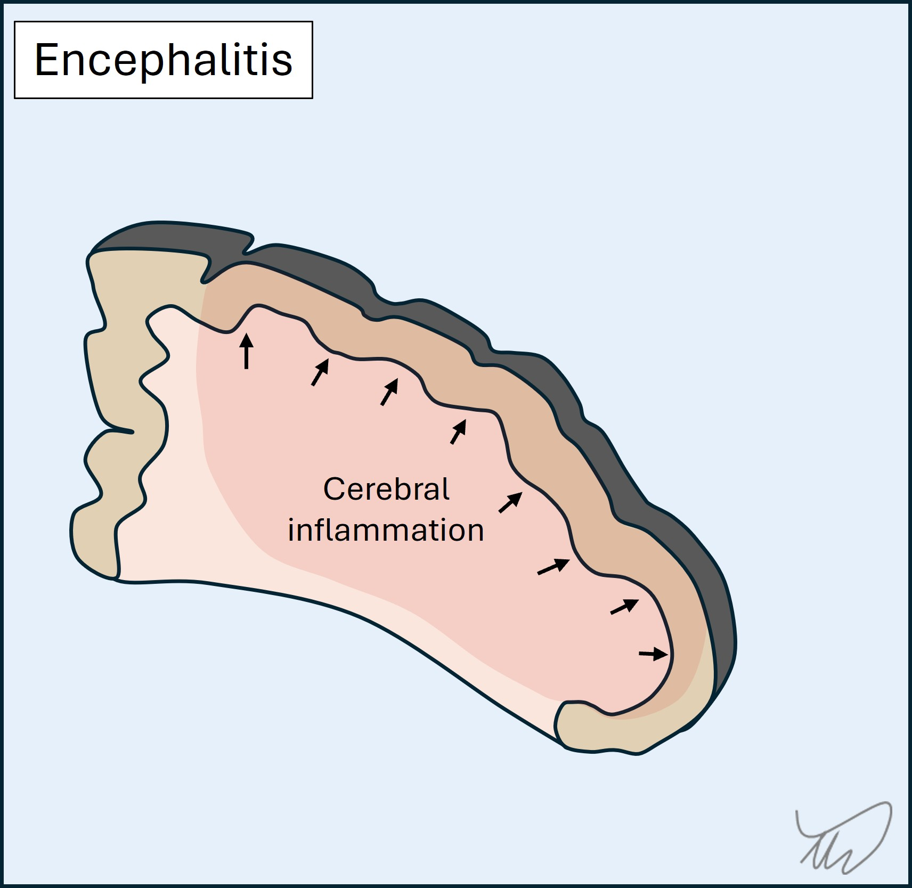
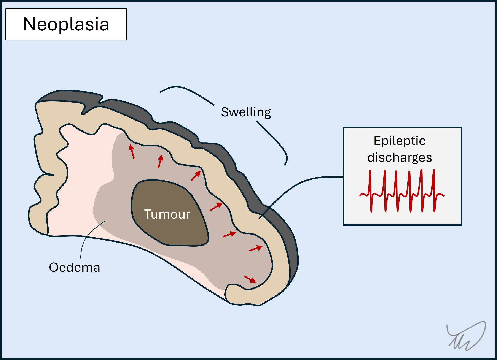
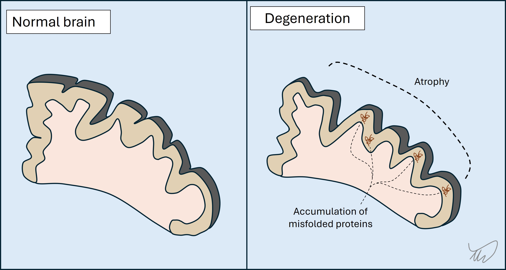

APPROACH: WHERE IS THE LESION, WHAT IS THE LESION?
What is the lesion?
After localising a lesion, our task is now to consider what it may be. There are many different pathological processes:
Regarding trauma, it’s often obvious from a history, and deficits may follow immediately - although more subtle ones may not be noticed in the primary assessment as other life-saving measures take priority. Trauma can also lead to delayed complications, including vascular (e.g. subdural haematoma), inflammatory (e.g. spinal cord contusion), and pressure-related (e.g. facial palsy after temporal bone fracture). It’s important to ask about recent trauma. It doesn't have to have been major. It is also sometimes not remembered, for example in patients with alcohol and drug-related problems, or with cognitive impairment.
The distinct pathological processes all have clinical features that allow us to predict the likely lesion with good accuracy after a careful assessment. The most important is tempo.
The pace of onset of a symptom tells us a great amount. Some conditions are sudden-onset; they may have maximal intensity from the start, or continue evolving. At the opposite extreme, some conditions take a gradual, insidious course over months or years - and the onset is not possible to determine; people become aware of the problem when it reaches a certain level. Between these extremes, conditions may present over minutes, hours, days, or weeks, and this information is critical for diagnosis.
What happens next is crucial - the symptoms may have stayed constant from onset, or evolved, and if so the pace of evolution is informative, as is the emergence of new features. The evolution may progress up to a certain point, then plateau and be followed by recovery (partial or complete) - or continue to worsen relentlessly. These characteristics tell us a great deal.
In some situations the symptoms are transient. They might be isolated as a one-of, but some disorders feature recurrent paroxysmal episodes. Important considerations are transient ischaemic attack (TIA), migraine and seizure, though other disorders also produce paroxysmal symptoms (see later).
We will now consider the various lesion categories and their typical features. Exceptions exist, but the principles shown are generally reliable.
Different vascular lesions exist, but the most common - and deadly - feature either obstruction of a vessel, causing ischaemia and infarction, or rupture of a vessel, producing haemorrhage. Globally, this is the biggest cause of neurological death.
Vascular events are generally sudden-onset, and often have their maximal intensity from the start. Examples include parenchymal brain damage from a stroke, and thunderclap headache due to subarachnoid haemorrhage. These disorders are characteristically sudden-onset - a more gradual onset is evidence against them.
1.Ischaemia and infarctionArterial occlusion leads to ischaemia and, unless blood flow is restored, infarction (ischaemic stroke) (figure). TIA arises when the flow is restored after a period and the deficits resolve (typically minutes, less often hours, and by definition less than 24 hours). The deficits reflect a particular vascular territory, and hence they are focal - for example dysphasia or contralateral paralysis. An exception is coma - still focal, due to ischaemia affecting deep consciousness centres, but manifesting in a global fashion. Basilar occlusion should always be considered in sudden-onset coma.
Depending on the site of the stroke, an extensive range of presentations can occur. Entire textbooks exist which catalogue these.
The affected area swells in the following 48 hours, which may lead to neurological deficits worsening, particularly in young patients with large infarctions and major swelling causing mass effect (space-occupying infarction). In the following week the swelling resolves and in the chronic stages (weeks-months) the infarct site undergoes scarring and atrophy.
Deficits can resolve entirely in some cases (mainly from minor strokes). Even after major strokes the deficits may partially heal as patients rehabilitate, although many patients are left with significant neurological deficits and delayed complications such as spasticity. They can also develop seizures (post-stroke epilepsy) due to scarring.
A rare form of ischaemic stroke arises due to thrombosis of the draining cortical veins and venous sinuses, termed venous infarction (figure). Focal neurological deficits arise, and seizures are common - whereas they are rare in the early stages of arterial infarction. Headache is usually present due to increased intracranial pressure, with papilloedema.
2. HaemorrhageThere are different sites blood can gather in the intracranial space.
A haemorrhagic stroke arises when there is blood in the brain itself (intracerebral or intraparenchymal haemorrhage) (figure). As with ischaemic stroke, this produces focal deficits. Unlike ischaemia, there is often early evolution in the symptoms as the haematoma expands, infiltrating regions and exerting mass effect. Blood is also irritative to cortex and can cause seizures - they are commoner in the acute phase than in ischaemic stroke.
In a subarachnoid haemorrhage, blood distributes around the lining of the brain (figure). Key features are severe headache, meningism, altered consciousness, and there may be seizures. Focal deficits are less typical than in stroke as it isn’t a parenchymal disease, but can arise due to compression of structures (cranial nerves, cortex) - they indicate a more severe haemorrhage. Subarachnoid haemorrhage is mostly due to trauma or a ruptured aneurysm though lots of causes exist.
Subdural and extradural haemorrhages are typically due to trauma. Blood expands on one side of the dura and pushes on the cortex. Extradural haemorrhage features rapid haematoma development from arterial blood, and consciousness falls as the brain herniates; without surgical drainage, death is likely. Subdural blood may present similarly, but is often slow in development due to lower-pressure venous blood, so may present with headache, cognitive symptoms, focal deficits (mimicking stroke), or seizures.
Cerebral contusions are areas of swelling and bleeding in the parenchyma after blunt trauma. They are small, and in frontal and temporal lobes. The main features are cognitive and behavioural - frank focal deficits such as paralysis or aphasia are less common.
3.Vascular compression of structuresVessels, normal or abnormal (e.g. aneurysmal), can compress neurological structures, generating symptoms.
This can cause focal deficits - the best known is a posterior communicating aneurysm causing an oculomotor palsy. Slow-growing aneurysms can also compress brain structures and present similarly to other space-occupying lesions such as tumours.
Another example is when arterial contact with a nerve root (i.e. neurovascular conflict) can trigger ephaptic transmission, leading to paroxysmal symptoms as above. Examples include trigeminal neuralgia (nerve V; painful bouts), hemifacial spasm ( VII; facial movements), and vestibular paroxysmia (VIII; vertigo episodes). Surgical separation of the artery and nerve can relieve symptoms in medically-refractory cases.
4. DissectionThe internal vessel lining sometimes tears, whether through trauma, violent neck movements, coughing, or spontaneously. This can happen with extra- and intracranial arteries. There are four types of clinical effect:
Inflammatory lesions build up over hours and days, then plateau and thereafter may improve, partially or fully, although some inflammatory disorders are so destructive they offer zero recovery potential. Some disorders do not cease without immunosuppression, so the natural history is not always onset, peak, then resolution without intervention.
The above trajectory is certainly useful when we meet patients after an event has concluded, but in the acute stage we don’t know how things will conclude. The main clue is evolution over hours-days. This tempo means it’s quite common for patients not to seek medical attention until several days into an episode when it becomes unmanageable. This is different to how people present following strokes (although stroke awareness campaigns such as FAST may have influenced this).
Inflammatory lesions can affect many sites in the nervous system. The best-known affect white matter (demyelination), and in the central nervous system the commonest cause is multiple sclerosis, which causes recurrent episodes of demyelination in the central nervous system and optic nerves.
Lesions can also affect cortex, as in autoimmune encephalitis. Inflammation of cranial or peripheral nerves is common, and the best-known example is Bell’s palsy, transient inflammation in nerve VII, probably triggered by a viral illness; 1/60 people will have this in their lifetime.
Inflammatory lesions can be focal (e.g. optic neuritis), multifocal (e.g. multiple cranial nerve palsies) or diffuse (e.g. demyelinating polyneuropathy). There are many neuroinflammatory disorders.
Infection is a somewhat special aetiology as it can be evident from additional features such as fever, myalgia, night sweats and flu-like symptoms - though these may be absent.
The tempo of development in infection is similar to inflammation. Many of the clinical features are due to the body’s inflammatory reaction to the infectious trigger, for example inflammation and pus in meningitis. The most extreme example is when an immunocompromised patient has an opportunistic infection; if their immune system reactivates (e.g. with HIV medication) severe inflammation arises, known as immune reconstitution inflammatory syndrome (IRIS) - a life-threatening situation.
Features due to infection generally develop over hours to days. Other infections develop more slowly as chronic infections, e.g. tuberculosis, HIV and syphilis - although all three often cause acute presentations as well.
In the central nervous system, the major three forms of infection are meningitis, encephalitis and abscess.
Meningitis involves the lining around the brain and spine (figure). This leads to headache, neck stiffness, photosensitivity and increased intracranial pressure. There may be focal deficits, for example from cranial nerve damage or inflammation and compression in the cortex - which also causes seizures. The pathology involves accumulation of inflammatory exudate as well as areas of focal infarction due to inflamed vessels (vasculitis). While viruses can cause meningitis, this is usually mild - whereas bacterial, fungal and parasitic causes are deadly.

Encephalitis is inflammation of the brain parenchyma (figure). The major causes are viruses. There is destruction of brain tissue with swelling causing mass effect on adjacent structures, leading to focal deficits (e.g. dysphasia, amnesia, paralysis), seizures and coma. Different infections affect specific brain regions so localisation can be a clue to the cause:
Encephalitis is lethal - without treatment for Herpes Simplex encephalitis, most patients die, while forms such as rabies are almost universally fatal. Interestingly, infective encephalitis can be followed by autoimmune encephalitis later.
Cerebral abscess occurs when a focal area of infection (typically bacterial) within the brain parenchyma is walled off and the centre fills with infective, necrotic material and pus. Mass effect arises and there is oedema around the abscess. Abscesses can be multiple. They may also rupture - if they do this into the ventricles it is life-threatening.

The spine is also a site affected by neuro-infection, including the epidural space lining the spine, the vertebra, and the intervertebral discs. Infection should always be considered in new onset spinal cord disorders, and fever makes this more likely.
There are also infections which affect the peripheral system - including Polio and West Nile (anterior horn cells), Varicella Zoster and Lyme disease (nerve roots), hepatitis E (brachial plexus), leprosy (nerves) and botulism (neuromuscular junction). The spectrum of neuro-infection is vast, and in some parts of the world, it is one of the major causes of neurological death.
Neoplastic lesions (tumours) develop at rates that vary widely.
Some are entirely benign and may barely change in a patient's lifetime, but may cause issues such as drug-refractory epilepsy, for which resection may help (e.g. ganglioglioma).
Others grow more quickly (weeks-months) and eventually exert mass effect on their surroundings, with symptoms arising due to some/all of:

Tumours sometimes cause sudden-onset deficits mimicking a stroke. This seems surprising given a gradually growing lesion, but the oedema and mass effect may reach a critical level to abruptly compromise structures, producing focal features. The patient may also have had a seizure followed by post-ictal deficits (Todd’s palsy).
The general theme with tumours is that progressive focal deficits, new onset seizures and evolving headaches over a subacute tempo is concerning and investigation is indicated.
Nervous system tissue is sensitive to the effects of toxic compounds and metabolic disturbance. A huge variety of syndromes can arise, with the tempo and clinical features depending on the causative disturbance and the tissues involved.
A general principle is that the deficits are not lateralised. Both sides of the central and peripheral nervous systems have similar metabolic needs and vulnerability to disturbances. A highly lateralised toxic/metabolic reaction would be unusual, although asymmetry can be seen - a notable example is hemiballismus due to striatal dysfunction in hyperglycaemia.
Consequences may be global - for example drowsiness or coma from sedatives (alcohol, benzodiazepines, opiates). They can also be focal when certain areas are particularly vulnerable to a given cause. Many examples exist.
The most obvious is alcohol-induced ataxia. This happens acutely but also chronically after excess intake for years, along with peripheral neuropathy. Other examples include:
While some deficiency states lead to chronic, indolent development of problems, some deficiencies present acutely. This happens when patients are existing in a homeostatic deficiency state, then are challenged by an additional factor - e.g. vomiting, infection or surgery. This additional metabolic stressor is enough to spark a cascade, leading to acute development of neurological problems such as Wernicke’s or neuropathy.
Toxicities can be acute, as blood levels peak, but also chronic, due to cumulative exposure, with different toxins producing characteristic tissue-specific lesions. Besides alcohol, various other examples include chemotherapy (neuropathy), metals (basal ganglia), tuberculosis medicines (optic nerve), methotrexate (white matter), gentamicin (vestibular and auditory systems), and phenytoin (cerebellum).
Degenerative conditions progress gradually over months or years. By the time symptoms emerge there has often been a substantial amount of degeneration preceding it.
In most cases there is loss of neurons, and accumulation of misfolded proteins (B amyloid, tau, alpha-synuclein, TDP-43, prion protein). What differentiates these disorders is the region of the nervous system affected, which influences clinical features. The general theme is problems with cognition (including language) and/or movement - the latter can arise through various mechanisms (weakness, ataxia, parkinsonism…).
Clinically, the evolution is gradual, and problems start in one brain region but gradually affect others. It is often the case that the pace of progression accelerates later in the disease.
Three of the best-known examples are below:
Degeneration is also seen in progressive forms of MS, for example in the years following an initial period of relapsing-remitting disease. In addition, a wide number of hereditary genetic disorders have a degenerative course - for example the many genetic cerebellar ataxias.
At the time of writing, no neurodegenerative disorders have highly effective disease modifying therapies. As the 21st century progresses, this begins to look like a real possibility.
A number of pathologies exist in which anatomical structures cause compression or other irritation of neurological structure. Generally something has prolapsed, dislocated, fractured, hypertrophied or somehow otherwise developed abnormal contact with its surroundings. This particularly happens at mobile sites, e.g. the vertebrae, tendons or muscles; it is less common around static structures.
This is particularly prominent in the peripheral nervous system. Examples include nerve root compression by prolapsed discs or hypertrophic bone structures (e.g. osteophytes), and peripheral nerve entrapment or compression against ligaments, tendons, through narrow spaces (e.g. the carpal tunnel), or against bones (e.g. fibular neck).
These produce focal deficits and there are well-known, frequently seen compression points that lead to recognisable syndromes. Localisation requires knowledge of the territory supplied by the structure (motor and sensory), and for nerves, accurately working out the site of the lesion, proximal to distal, is achieved by finding the point above which emerging proximal branches are intact. The more proximal the lesion, the more extensive the deficits.
In the central nervous system this compression is particularly prominent in the spinal cord, where disc prolapse can cause compressive myelopathy, leading to spastic weakness, mobility problems and sphincter disturbance. In contrast the brain is not particularly affected by this type of process.
This resource concerns lesions, including chemical. In real practice functional disorders - symptoms not due to a lesion but altered brain functioning - are extremely common. There may well be a lesion present - having a structural neurological disorder is a risk factor for a functional one - but the symptoms are not directly due to its effects, e.g. a damaged tract.
They are associated with factors such as chronic pain and psychiatric problems though the diagnosis is not based on the presence of these, nor are they necessary.
Functional disorders often present suddenly, mimicking strokes or seizures. There may be triggering factors such as pain or stressors.
The diagnosis is based on demonstrating inconsistency - for example weakness on voluntary movement (testing a muscle group in isolation) not present on automatic movement - for example hip extension weakness on the couch with intact power on walking. Another example is a continuous involuntary movement that disappears with distraction.
To an extent, incongruence with anatomical patterns and structural disorders is also supportive evidence. An example is sensory deficits not fitting a recognisable pattern - caution is advised here as sensory deficits in structural lesions (nerve or root lesion) often do not fit textbook diagrams.
Final words of caution: functional problems may present in people with underlying structural disorders, for example functional weakness in someone with sensory ataxia. Similarly, structural disorders can present with patterns that appear suggestive of functional disorders, including variability (myasthaenia), or inconsistency between voluntary versus involuntary (apraxia, neglect, basal ganglia disorders). Functional disorders are very common for virtually every neurological presentation, but the diagnosis should not be made carelessly, nor only by exclusion of other causes, and never on the basis of who the patient is. Countless errors are made due to all three.
We can now think about how to consider the 'where?' and 'what?' when we take the History.